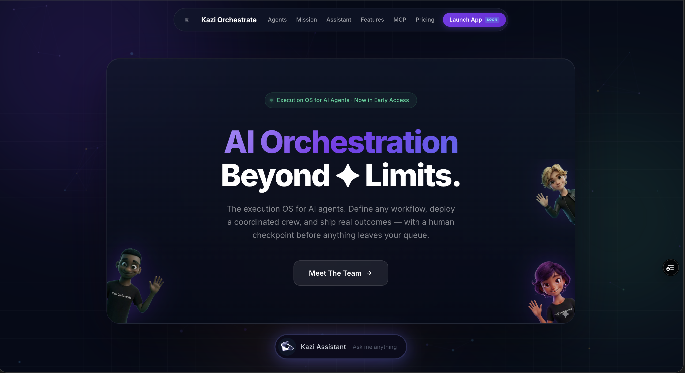

<!DOCTYPE html>
<html lang="en">
<head>
  <meta charset="utf-8">
  <title>Kazi Orchestrate — Elijah Rose</title>
  <meta name="viewport" content="width=device-width, initial-scale=1">
  <link rel="icon" href="../images/favicon.png" type="image/png">
  <link rel="preconnect" href="https://fonts.googleapis.com">
  <link href="https://fonts.googleapis.com/css2?family=Space+Grotesk:wght@600;700&family=Inter:wght@300;400;500;600&display=swap" rel="stylesheet">
  <script src="https://unpkg.com/react@18.3.1/umd/react.development.js" integrity="sha384-hD6/rw4ppMLGNu3tX5cjIb+uRZ7UkRJ6BPkLpg4hAu/6onKUg4lLsHAs9EBPT82L" crossorigin="anonymous"></script>
  <script src="https://unpkg.com/react-dom@18.3.1/umd/react-dom.development.js" integrity="sha384-u6aeetuaXnQ38mYT8rp6sbXaQe3NL9t+IBXmnYxwkUI2Hw4bsp2Wvmx4yRQF1uAm" crossorigin="anonymous"></script>
  <script src="https://unpkg.com/@babel/standalone@7.29.0/babel.min.js" integrity="sha384-m08KidiNqLdpJqLq95G/LEi8Qvjl/xUYll3QILypMoQ65QorJ9Lvtp2RXYGBFj1y" crossorigin="anonymous"></script>
  <style>
    *,*::before,*::after{box-sizing:border-box;margin:0;padding:0}
    :root{--bg:#080b0f;--bg-1:#0d1117;--bg-2:#161b24;--border:rgba(255,255,255,0.07);--border-hi:rgba(255,255,255,0.14);--text:#f0ede8;--text-2:rgba(240,237,232,0.5);--text-3:rgba(240,237,232,0.28);--accent:#7c3aed;--font-display:'Space Grotesk',sans-serif;--font-body:'Inter',sans-serif;}
    html{scroll-behavior:smooth}body{background:var(--bg);color:var(--text);font-family:var(--font-body);font-size:16px;line-height:1.6;overflow-x:hidden;-webkit-font-smoothing:antialiased}
    ::selection{background:var(--accent);color:#fff}
    ::-webkit-scrollbar{width:4px}::-webkit-scrollbar-track{background:var(--bg)}::-webkit-scrollbar-thumb{background:var(--border-hi);border-radius:2px}
    .reveal{opacity:0;transform:translateY(24px);transition:opacity .7s cubic-bezier(.22,1,.36,1),transform .7s cubic-bezier(.22,1,.36,1)}.reveal.visible{opacity:1;transform:none}
    @keyframes glow-pulse{0%,100%{opacity:.2}50%{opacity:.45}}.glow-orb{position:absolute;border-radius:50%;filter:blur(80px);pointer-events:none;animation:glow-pulse 4s ease-in-out infinite}
    @media(max-width:768px){.d-hero{padding:100px 20px 60px !important}.d-grid{grid-template-columns:1fr !important;gap:20px !important}.d-agents{grid-template-columns:1fr 1fr !important}.px-section{padding-left:20px !important;padding-right:20px !important}}
  </style>
</head>
<body><div id="root"></div>
<script type="text/babel">
const{useState,useEffect,useRef}=React;
function useReveal(t=0.12){const ref=useRef(null);useEffect(()=>{const el=ref.current;if(!el)return;const io=new IntersectionObserver(([e])=>{if(e.isIntersecting){el.classList.add('visible');io.disconnect();}},{threshold:t});io.observe(el);return()=>io.disconnect();},[]);return ref;}
function Nav(){const[s,setS]=useState(false);useEffect(()=>{const h=()=>setS(window.scrollY>40);window.addEventListener('scroll',h);return()=>window.removeEventListener('scroll',h);},[]);return(<nav style={{position:'fixed',top:0,left:0,right:0,zIndex:999,padding:'0 28px',height:64,background:s?'rgba(8,11,15,0.95)':'transparent',backdropFilter:s?'blur(20px)':'none',borderBottom:s?'1px solid var(--border)':'1px solid transparent',transition:'all .4s',display:'flex',alignItems:'center',justifyContent:'space-between'}}><a href="../index.html" style={{fontFamily:'var(--font-display)',fontWeight:700,fontSize:17,color:'var(--text)',textDecoration:'none'}}>Elijah Rose<span style={{color:'#e8c547'}}>.</span></a><a href="../index.html#work" style={{fontSize:13,color:'var(--text-2)',textDecoration:'none',fontWeight:500,padding:'8px 16px',border:'1px solid var(--border)',borderRadius:100,transition:'all .2s'}} onMouseEnter={e=>{e.currentTarget.style.borderColor='var(--border-hi)';e.currentTarget.style.color='var(--text)'}} onMouseLeave={e=>{e.currentTarget.style.borderColor='var(--border)';e.currentTarget.style.color='var(--text-2)'}}>← All projects</a></nav>);}

function App(){
  const[v,setV]=useState(false);useEffect(()=>{setTimeout(()=>setV(true),80);},[]);
  const sp=d=>({opacity:v?1:0,transform:v?'none':'translateY(28px)',transition:`opacity .8s cubic-bezier(.22,1,.36,1) ${d}s,transform .8s cubic-bezier(.22,1,.36,1) ${d}s`});
  const A='#7c3aed', AD='rgba(124,58,237,0.12)';
  const agents=[
    {name:'Riley',role:'Research & Intelligence',desc:'Gathers context, surfaces insights, and maps the landscape before any work begins. Makes sure the crew always operates with the right information at the right time.'},
    {name:'Jordan',role:'Execution & Output',desc:'Produces the deliverables — messages, drafts, reports, and actions — in the exact format the workflow requires. Turns the plan into real output, every time.'},
    {name:'Sam',role:'Quality & Oversight',desc:'Reviews every output before it reaches the queue. Enforces standards, catches edge cases, and keeps every agent in the crew accountable to the objective.'},
    {name:'Alex',role:'Creative Director',desc:'Handles brand, copy, and visual direction. Ensures that anything customer-facing looks and sounds like you.'},
    {name:'Cody',role:'Kazi Coder',desc:'Writes, reviews, and ships code across the stack. Handles feature builds, bug fixes, and technical tasks — turning specs into working software, end to end.'},
  ];
  const capabilities=[
    {title:'Human-in-the-loop',desc:'Every agent output lands in your queue for approval before it goes anywhere. Nothing executes without your sign-off.'},
    {title:'Workflow definition',desc:'Describe what you want to accomplish — Kazi breaks it into steps, assigns the right agents, and runs the workflow end to end.'},
    {title:'24/7 RAG assistant',desc:'Persistent vector memory via ChromaDB gives every agent access to your documents, policies, and prior context at all times.'},
    {title:'Full audit trail',desc:'Every agent action is logged with timestamps and traceable decisions. Operational safety is built in, not bolted on.'},
    {title:'Multi-tenant architecture',desc:'Built for teams — role-based dashboards (Revenue, Finance, People, Ops, Executive) surface the metrics and activity that matter per function.'},
    {title:'Integrations',desc:'Agent outputs land in the right place — your tools, inboxes, and systems stay connected so work actually ships.'},
  ];
  const ref1=useReveal(),ref2=useReveal(),ref3=useReveal();
  return(<>
    <Nav/>
    {/* HERO */}
    <section className="d-hero" style={{padding:'120px 32px 72px',maxWidth:1100,margin:'0 auto',position:'relative'}}>
      <div className="glow-orb" style={{width:500,height:500,background:`radial-gradient(circle,${A}22,transparent)`,top:'-100px',left:'-80px'}}/>
      <div style={sp(0.1)}>
        <span style={{fontSize:11,fontWeight:600,letterSpacing:'0.12em',textTransform:'uppercase',color:A,background:AD,padding:'5px 13px',borderRadius:100,border:`1px solid ${A}44`}}>Live · Execution OS & Multi-Agent SaaS</span>
      </div>
      <h1 style={{...sp(0.2),fontFamily:'var(--font-display)',fontSize:'clamp(44px,7vw,84px)',fontWeight:700,letterSpacing:'-3px',lineHeight:.92,margin:'22px 0 18px'}}>Kazi<span style={{color:A}}>.</span></h1>
      <p style={{...sp(0.25),fontFamily:'var(--font-display)',fontSize:'clamp(18px,3vw,28px)',fontWeight:600,color:'var(--text-2)',letterSpacing:'-0.5px',marginBottom:20}}>The execution OS for AI agents.</p>
      <p style={{...sp(0.3),fontSize:'clamp(14px,1.8vw,17px)',color:'var(--text-2)',maxWidth:580,lineHeight:1.75,marginBottom:36}}>Kazi lets you define any business workflow, deploy a coordinated crew of specialized AI agents to execute it, and stay in control with a human checkpoint before anything goes out. It replaces the scattered stack of tools, manual handoffs, and one-off automations with a single place where your agents work — and you approve.</p>
      <div style={{...sp(0.4),display:'flex',gap:10,flexWrap:'wrap',marginBottom:36}}>
        {['React','TypeScript','FastAPI','Python','ChromaDB','Docker','AWS EC2'].map(s=><span key={s} style={{fontSize:11,fontWeight:600,padding:'5px 13px',borderRadius:100,background:'rgba(255,255,255,0.06)',border:'1px solid rgba(255,255,255,0.12)',color:'var(--text-2)'}}>{s}</span>)}
      </div>
      <div style={sp(0.45)}>
        <a href="https://kazi-nu.vercel.app/" target="_blank" style={{display:'inline-flex',alignItems:'center',gap:8,padding:'13px 28px',borderRadius:100,background:A,color:'#fff',fontWeight:600,fontSize:14,textDecoration:'none',transition:'opacity .2s'}} onMouseEnter={e=>e.currentTarget.style.opacity='.82'} onMouseLeave={e=>e.currentTarget.style.opacity='1'}>View live project →</a>
      </div>
    </section>

    {/* MINDSET CALLOUT */}
    <section className="px-section" style={{padding:'0 32px 56px',maxWidth:1100,margin:'0 auto'}}>
      <div style={{background:'var(--bg-1)',border:`1px solid ${A}33`,borderLeft:`3px solid ${A}`,borderRadius:14,padding:'26px 30px'}}>
        <div style={{fontSize:11,fontWeight:600,letterSpacing:'0.12em',textTransform:'uppercase',color:A,marginBottom:10}}>Mindset applied</div>
        <p style={{fontSize:14,color:'var(--text-2)',lineHeight:1.7,marginBottom:14}}>Operational safety beats novelty. Every agent action has a visible checkpoint, structured outputs, and a clear audit trail.</p>
        <div style={{display:'grid',gridTemplateColumns:'repeat(auto-fit,minmax(200px,1fr))',gap:12}}>
          {[
            'Human-in-the-loop on critical actions',
            'Structured JSON outputs for reliability',
            'Traceable decisions and logs by default',
          ].map(item => (
            <div key={item} style={{display:'flex',gap:10,alignItems:'flex-start',fontSize:13,color:'var(--text-2)'}}>
              <span style={{width:8,height:8,borderRadius:'50%',background:A,boxShadow:`0 0 6px ${A}`}}></span>
              <span>{item}</span>
            </div>
          ))}
        </div>
      </div>
    </section>

    {/* SCREENSHOT */}
    <section className="px-section" style={{padding:'0 32px 72px',maxWidth:1100,margin:'0 auto'}}>
      <div style={{borderRadius:20,overflow:'hidden',border:'1px solid var(--border-hi)',boxShadow:`0 0 80px ${A}22`}}>
        
      </div>
    </section>

    {/* AGENT CREW */}
    <section className="px-section" style={{padding:'0 32px 80px',maxWidth:1100,margin:'0 auto'}}>
      <div ref={ref1} className="reveal" style={{marginBottom:32}}>
        <div style={{fontSize:11,fontWeight:600,letterSpacing:'0.12em',textTransform:'uppercase',color:A,marginBottom:10}}>The Agent Crew</div>
        <h2 style={{fontFamily:'var(--font-display)',fontSize:'clamp(26px,4vw,40px)',fontWeight:700,letterSpacing:'-1.5px'}}>Five specialized agents,<br/>one coordinated crew.</h2>
      </div>
      <div className="d-agents" style={{display:'grid',gridTemplateColumns:'repeat(auto-fill,minmax(min(100%,300px),1fr))',gap:16}}>
        {agents.map((a,i)=>{const r=useReveal();return(
          <div key={a.name} ref={r} className="reveal" style={{padding:'24px',background:'var(--bg-1)',border:'1px solid var(--border)',borderRadius:14,borderTop:`2px solid ${A}55`,transitionDelay:`${i*0.07}s`}}>
            <div style={{fontFamily:'var(--font-display)',fontSize:18,fontWeight:700,marginBottom:4}}>{a.name}</div>
            <div style={{fontSize:11,fontWeight:600,letterSpacing:'0.08em',textTransform:'uppercase',color:A,marginBottom:10}}>{a.role}</div>
            <p style={{fontSize:13,color:'var(--text-2)',lineHeight:1.7}}>{a.desc}</p>
          </div>
        );})}
      </div>
    </section>

    {/* CAPABILITIES */}
    <section className="px-section" style={{padding:'0 32px 80px',maxWidth:1100,margin:'0 auto'}}>
      <div ref={ref2} className="reveal" style={{marginBottom:32}}>
        <div style={{fontSize:11,fontWeight:600,letterSpacing:'0.12em',textTransform:'uppercase',color:A,marginBottom:10}}>Platform Capabilities</div>
        <h2 style={{fontFamily:'var(--font-display)',fontSize:'clamp(26px,4vw,40px)',fontWeight:700,letterSpacing:'-1.5px'}}>Built for precision,<br/>not unmonitored autonomy.</h2>
      </div>
      <div className="d-grid" style={{display:'grid',gridTemplateColumns:'1fr 1fr',gap:16}}>
        {capabilities.map((c,i)=>{const r=useReveal();return(
          <div key={c.title} ref={r} className="reveal" style={{padding:'28px 28px',background:'var(--bg-1)',border:'1px solid var(--border)',borderRadius:14,transitionDelay:`${i*0.07}s`}}>
            <h3 style={{fontFamily:'var(--font-display)',fontSize:17,fontWeight:700,marginBottom:10,color:A}}>{c.title}</h3>
            <p style={{fontSize:13,color:'var(--text-2)',lineHeight:1.75}}>{c.desc}</p>
          </div>
        );})}
      </div>
    </section>

    {/* NEXT */}
    <section style={{padding:'60px 32px',background:'var(--bg-1)',borderTop:'1px solid var(--border)',textAlign:'center'}}>
      <div style={{marginBottom:14,fontSize:11,fontWeight:600,letterSpacing:'0.12em',textTransform:'uppercase',color:'var(--text-3)'}}>Next project</div>
      <a href="relay.html" style={{fontFamily:'var(--font-display)',fontSize:'clamp(28px,4vw,48px)',fontWeight:700,color:'var(--text)',textDecoration:'none',display:'inline-flex',alignItems:'center',gap:14,transition:'gap .2s'}} onMouseEnter={e=>e.currentTarget.style.gap='22px'} onMouseLeave={e=>e.currentTarget.style.gap='14px'}>Relay <span style={{color:'#22d3ee'}}>→</span></a>
    </section>
  </>);
}
ReactDOM.createRoot(document.getElementById('root')).render(<App/>);
</script></body></html>
